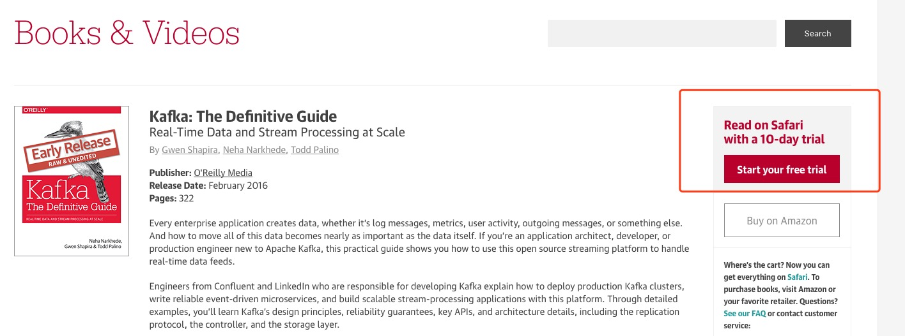

QQ 群聊天记录 001 号：关于盗版书的讨论¶
在我创建的两个技术 QQ 群里面， 时不时会出现一些有趣的讨论内容， 有群友建议我把这些内容记录下来并在网上进行分享， 我一直觉得这是一个很好的建议， 但这个建议由于种种原因却一直未能实现。
前几天有人违规在群里分享盗版书， 我在将违规人员移除出群之后和群友们发生了一系列对话， 其中谈到了关于书本版权的问题、作译者的收入问题、群规禁止分享盗版的理由、以及作译者如何创收等话题。 我觉得这些话题都很有趣， 所以就把这些对话整理成本文， 以此来与大家分享。
本文的内容均整理自 QQ 群聊天记录， 为了方便浏览， 对一些内容的顺序做了整合处理， 并且修改了一些错别字， 除此之外没有对原文做其他改动。
因为这是第一次跟大家分享群的聊天整理记录， 所以难免会有不足的地方， 欢迎大家给我意见和反馈， 帮助我把这个“QQ 群聊天记录”系列做得更好。
今后如果群里又再发生有趣的话题讨论， 我会再跟大家分享的！
黄健宏
2017.8.5
既然电子书可以共享，那么为什么钱包不能够共享？¶
张成磊 10:34:30
发到群里呀，资源共享嘛 @刘俊红
黄健宏 13:18:31
@张成磊 @刘俊红 因为分享盗版书被移除
最烦这些打着“资源共享”旗号盗版别人工作成果的人，下次如果有人想要搞这种共享，建议先把自己的钱包共享出来再说。
我亦飘零久 13:44:20
我觉得黄老师的观点有点偏激了，网络传播电子书也有优点，至少起到了宣传的作用，真正想看书的人都会买正版的，我一般都是用电子书试读，发现内容确实好就会买正版
好书永远不会蒙尘，就像redis设计与实现就很好，希望多出点这样有内容的读物[表情]
阿龙 13:50:16
不是作者偏激，跟出版社签的版权合同，作者也没办法的
而且知识付费不也正常吗

黄健宏 10:55:38
@我亦飘零久 不是偏激，道理就是这样的。既然能分享盗版书，为什么不能分享自己的钱包呢？说到底不过是慷他人之慨罢了。
另外，如果因为所谓的“盗版能够帮助书本宣传”而肯定盗版，那么世界上因为走投无路而犯罪的人，是不是都可以无罪释放了？做人要讲究逻辑，朋友们。
flyingghost 10:59:56
事情总是有好的一面也有坏的一面。杀人都能减少人口压力。但拿“能够帮书本宣传”的收益而去为自己盗版行为做合理化的，建议先去拿心怀天下的高尚情怀去杀个人试试，能回得来，再分享盗版。
哈喽 11:01:55
侧面来说，假如有本书能被盗版，说明这书内容质量是不错的。
国内写书、翻译收入几何¶
黄健宏 11:02:03
在国内，写一本书的报酬本来就很少的，而这其中很大一部分原因又与盗版有关。
赚钱少是一回事，更关键的是打击作译者的热情，这个是后患无穷的，等把所有有心写书的好作者都淘汰完了，以后剩下就只能看烂作者写烂书了，劣币驱逐良币的道理，大家都懂的，我就不多说了。
可能有人说，那我不看国内书啊，我看外文。
可是现在国家的政策也在逐渐向国内偏移了，以后国内书的比重会越来越增加，外文书会逐渐减少。
哈喽 11:02:34
能说下写本书大概报酬是多少么
hexm 11:02:44
只有被侵犯了才知道其中的艰辛
阿龙 11:02:47
作者签的阶梯版税吗？估计也就8%-12%
flyingghost 11:02:54
支持群主。支持劳动获得合理回报。
红薯 11:03:07
比写代码赚钱
国内的书价格还算便宜的，国外的更贵
黄健宏 11:05:31
> 能说下写本书大概报酬是多少么
大部分都不怎样，真正能靠写书吃饭的，大概只有吴军老师哪种卖几十万本的人才行，但全中国有几个吴军老师级别的 IT 技术书作者？
黄健宏 11:06:09
> 作者签的阶梯版税吗？估计也就8%-12%
是的，大概就这样。卖书分成。
翻译的报酬就更可怜了，按时薪来算的话，比麦当劳兼职还惨。
国内有良心的作译者，基本上都是在靠燃烧自己在做了，不赔钱就算了，赚钱不敢想，朋友们。
阿龙 11:07:35
出版社利润很高的，可惜的是给作者的并不多，拿着国家给的书号，套在作者的劳动成果上，现在编辑都懒。除了怕出出版事故，很多东西都得要作者做
flyingghost 11:08:17
。。。国内翻译真的很惨。。。被外包和学生兼职拉低了整体行业水准和收入水准。
黄健宏 11:09:47
>出版社利润很高的，可惜的是给作者的并不多，拿着国家给的书号，套在作者的劳动成果上，现在编辑都懒。除了怕出出版事故，很多东西都得要作者做
现在有些出版社和编辑，找一些作者，直接翻译文档、抄网文，一个新技术出来就追热点，出几本垃圾书骗钱，比比皆是。
最近不是就出了一个直接翻译文档出书的事么，微博和微信上都传遍了，其实只是冰山一角。
@_@ 11:10:25
确实 有些书真的很菜
本群禁止传播盗版资源的初衷¶
黄健宏 11:12:31
所以，如果各位见到一本好书，一个好的作译者，就帮忙买本书支持一下吧，认真出书，真的很艰难的。
另外，自己盗版就偷偷盗吧，毕竟盗版也是这个世界上客观存在的现象，但是千万不要用什么“盗版也有XX帮助”这样的傻瓜理由去支持盗版了，如果一定要做的话，建议先把自己的钱包跟群友分享了，再来谈。
黄健宏 11:16:39
我认识的一些朋友，花了成年的时间，好不容易写了一本书，出版第二天就在百度和淘宝上发现盗版了，这种感觉，真的是心在滴血啊。
不当家不知道柴米贵，不做父母不知道什么叫“可怜天下父母心”，这种感觉，没有出过书的人，是很难理解的。赞成和制作盗版的人，如果有一天他们有机会成为作者的话，他们就懂了。
hexm 11:18:58
支持正版，盗版确实无耻，尤其是还传播的
不尊重人的劳动成果
叮了个铛 11:12:08
不过盗版有盗版的好处
window 中国有多少用正版的
office有多少
所以不能说盗版完全是没有帮助的 只能说不好
黄健宏 11:20:30
@叮了个铛 我没有完全否定盗版，我也说这是一种客观存在的现象。说盗版有益，实际上就是“多难兴邦”的说法，有些盗版者会用这样的借口骗自己，你如果真的去问作者，他们愿不愿意被盗版，以此来换取你口中的那种可能存在的“宣传效果”，我想没有几个人会愿意的。
红薯 11:20:48
支持正版的同时，其实我也在用盗版[表情]
要规范还得需要法律层面的支持，靠道德很难约束
黄健宏 11:26:41
总而言之，作为作译者的一员，外面的世界我虽然管不了，但我很愿意在自己的这个小群里面，拒绝分享盗版，从自己做起，仅此而已的。
而且我拒绝分享的不只是我自己的书，是所有作品都一视同仁。
事实上，进群得比较早的朋友应该会知道，这里曾经有几次出现盗版我书的事件，我也是警告就算了，之后他们把盗版撤了，我就不再追究了。
相反，如果有人分享别的盗版书，都会直接被踢，我觉得这样做已经非常公平了。
原创作者的创收方法讨论¶
哈喽 11:09:25
（写书）是不是 还不如 在github 上分享，然后来个 打赏更快
黄健宏 11:33:55
> 是不是 还不如 在github 上分享，然后来个 打赏更快
打赏这种事很难说的，有些名人的爆文，一篇在微信上就能收入好几万，不好评估。
我就说一个自己的数据吧，RedisDoc.com ，我从 2011 年、Redis 2.2 版本开始维护，到前几年还有贴打赏二维码，但是这几年来，个人打赏收入总共只有几百块。
所以我觉得，最起码对于我这种小作者来说，打赏不是一条可持续的道路，写书出版的钱虽然也不多，但起码能吃上粥。
哈喽 11:34:31
名气上来了，后面的路也顺畅
就像买房子，手上钱是少了，以后的资产就更多了。坚持下去，没坏处的
齐 11:38:04
搞技术直播，开班教学
黄健宏 11:38:40
@齐 嗯，这个的确是一条增收的路，目前有计划在做。
flyingghost 11:38:47
打赏的初衷是感谢付出，是对劳动成果的赞赏。
但是在国内，没有这个氛围。尤其是不那么太傻白甜的程序员这个群体来说。
国内的打赏，主力是那些爱豆，名人，网红。付费者主力是那些人傻钱多的二逼，而他们，不是技术作者的用户群。
Reddit-Mint-Fly 11:40:37
那些给主播打赏的还不如去p
觉得那些人智障
哈喽 11:41:22
那些是平台炒作的了
你别信那么多
那些钱都是平台给的
拉些水军去炒主播
Reddit-Mint-Fly 11:41:50
有理
黄健宏 11:41:59
@flyingghost 是的，对于技术书来说，如果能够免费阅览全文的话，考虑赞助的人就会少。出版从某种角度来说就是一种“强制别人打赏”的机制。
举个例子，如果你想看一本书，但朋友免费送了你一本，你还会为了“支持作者的劳动”而再去购买一本吗？我想不太可能的。
盗版也是这个道理，既然已经免费得到了，谁会去付费？
有人会这么做，但我想这个比例，很少。
flyingghost 11:42:48
技术直播也很难做。
v2等技术圈充斥着对收费内容提供者的怀疑和排斥。一方面技术圈本来就赞赏开源免费，另一方面大家都缺乏付费习惯，再加上现在技术直播等付费教学水平大都停留在培训学校的水平，更遭到技术圈的嗤鼻。
能在这一块做到名利双收的技术大牛少之又少。
从另一个角度来说，个体的付费能力和付费意愿本来就不够强，而且越高端的内容能读爱读的就越少，针对个体的高端内容的收费在哪个领域都是难题。
哈喽 11:42:59
我在简书上写过一篇关于websocket的，但观看人多，0打赏
黄健宏 11:43:31
打赏很难的，跟我上面，RedisDoc.com 好几年只赚了几百块打赏的例子一样。
现在就算是收费的技术视频，在盗版的挤压下，都很少有能盈利的，更别说想靠免费视频收打赏了，基本上难于上青天。
熟悉我的朋友应该知道我之前在小象做过视频，就被盗版得到处都是
你卖 500 ，别人卖 300 ，你卖 300 ，别人卖 100 ，你卖 50 ，别人 30 就卖了。
你要出人、出时间、出资源去录视频，别人盗版一个就一本万利，坐着收钱，无本买卖，拼不过的。
flyingghost 11:45:38
不如换一种思路：针对企业和团体，提供收费培训服务。企业培训这块做的好，大有钱途。
做培训，优点是盗版难度提高，付费意愿和力度提高。缺点是受个人时间精力限制较大，无法发挥互联网的群体基数优势。
黄健宏 11:46:54
@flyingghost 是的，针对公司的培训，是少数收入比较稳定的。
flyingghost 11:48:12
赚钱有两个办法：
一是把有限的时间和精力卖出更高的单价。——这是企业级市场擅长的。
二是把有限的时间和精力卖出更多次。——这是互联网和内容出版擅长的。
所以我的理想是主打企业培训领域得利，次推互联网领域搏名。利为名创造物质基础，名为利提供潜力空间。哈哈哈！
黄健宏 11:49:49
是的，说的很对。